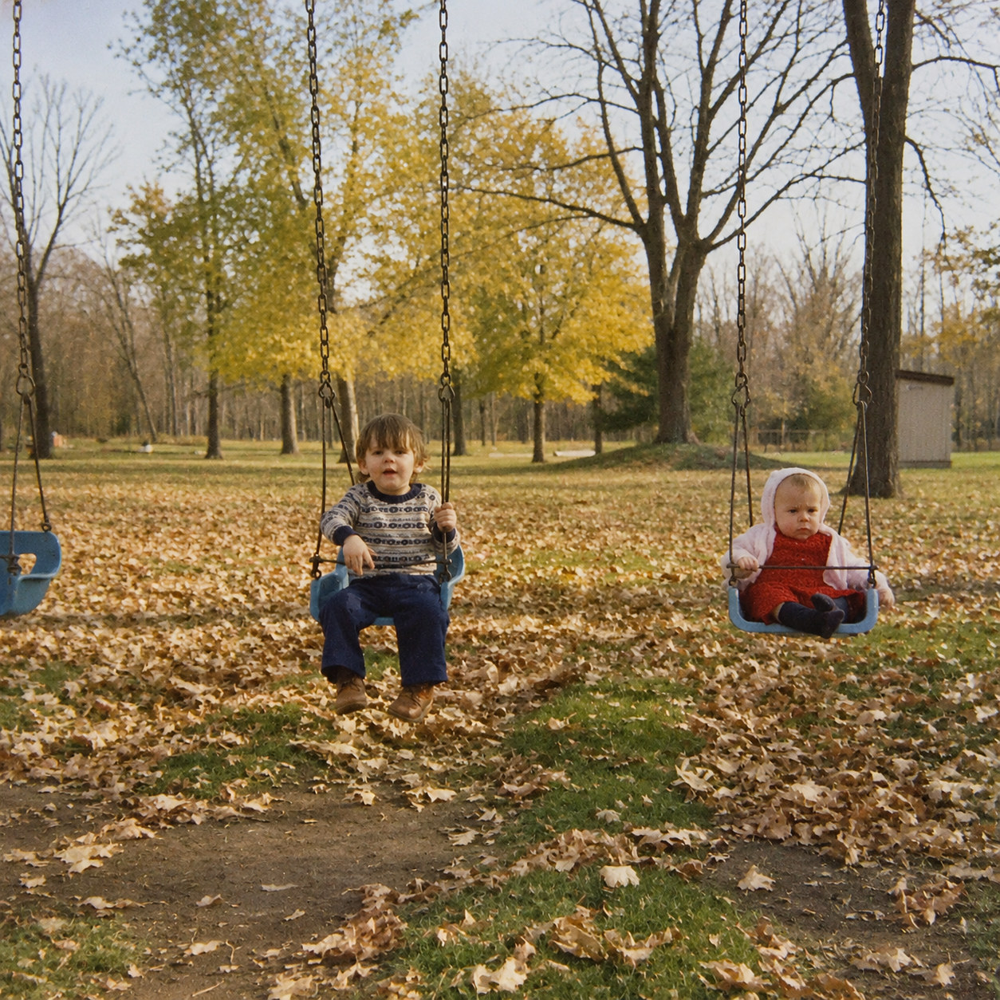
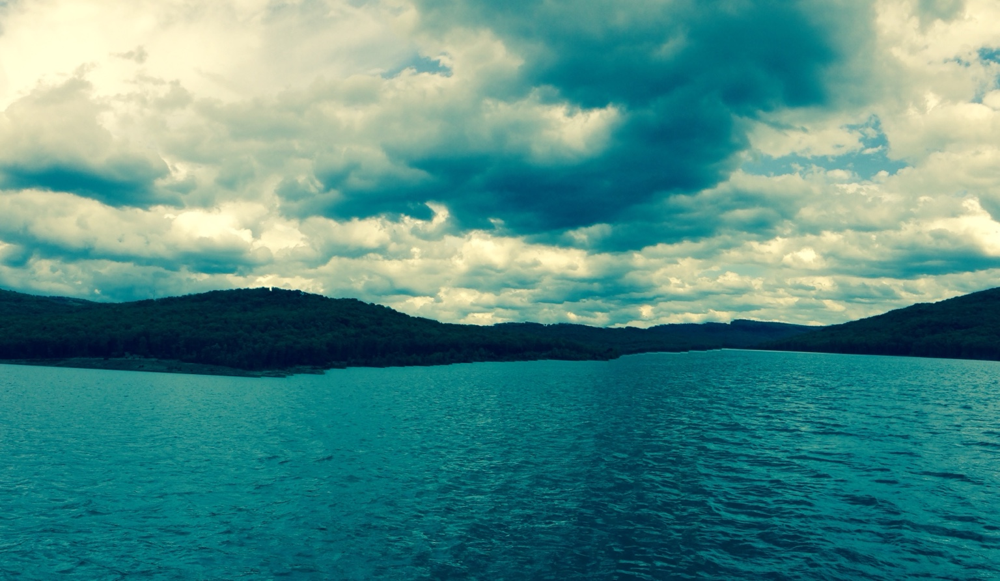
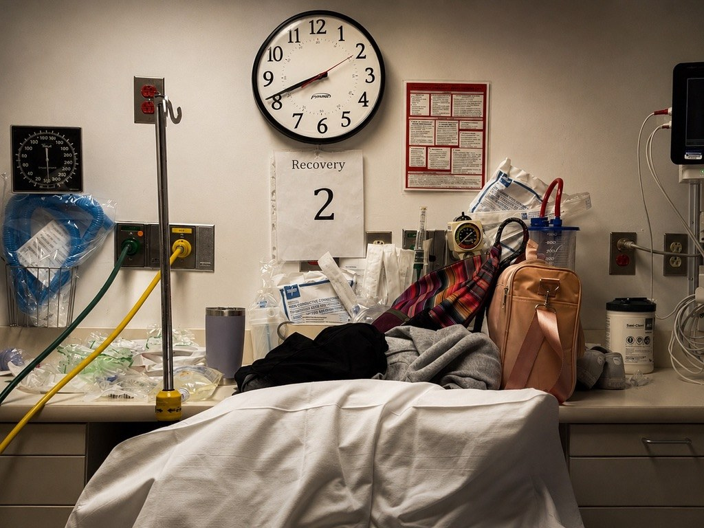
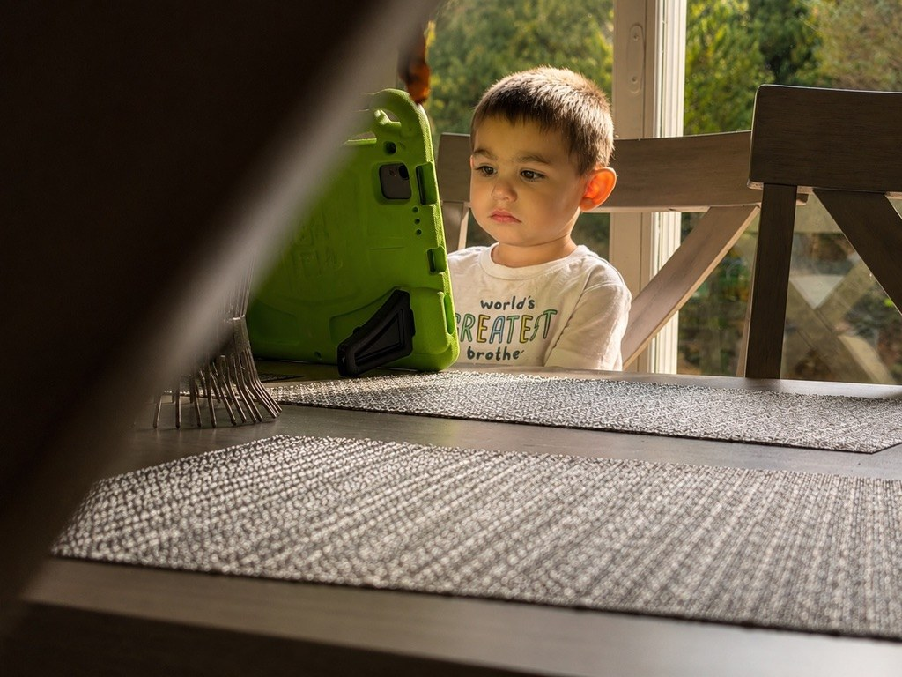
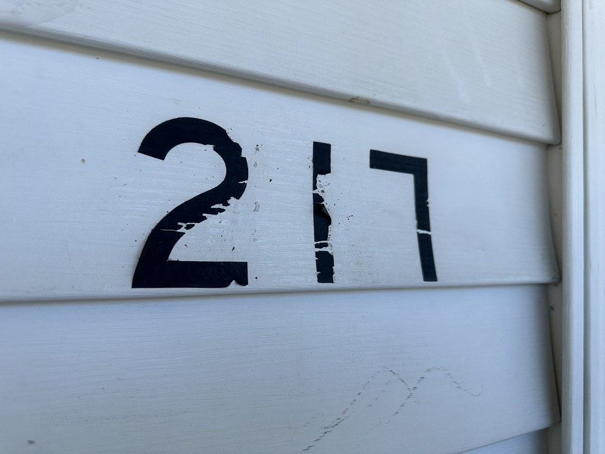
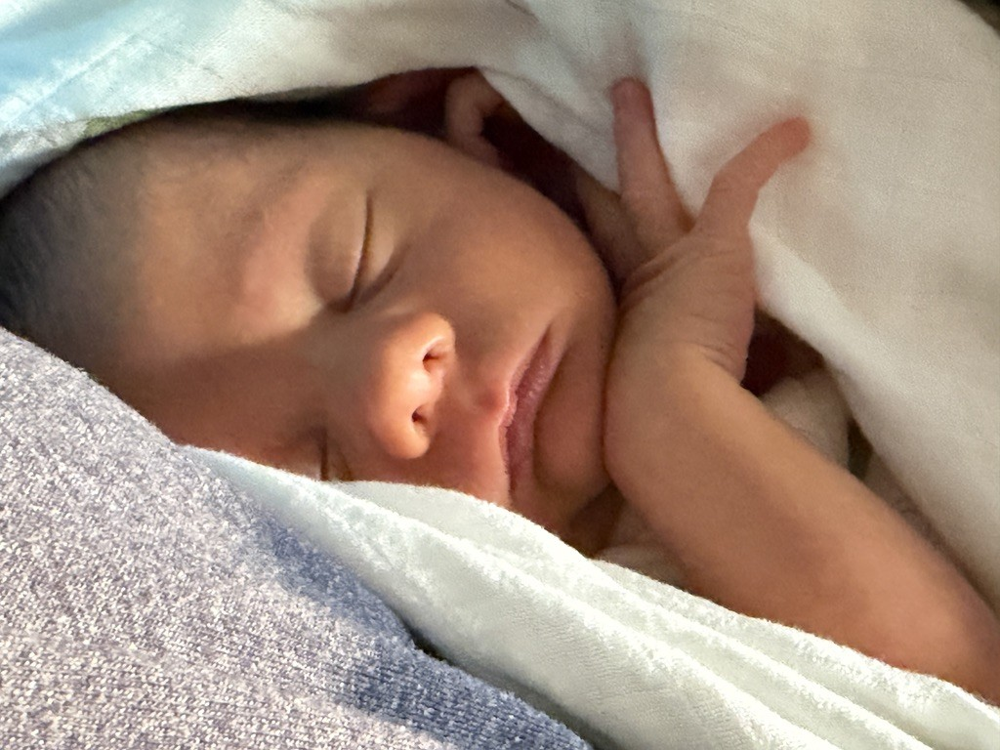
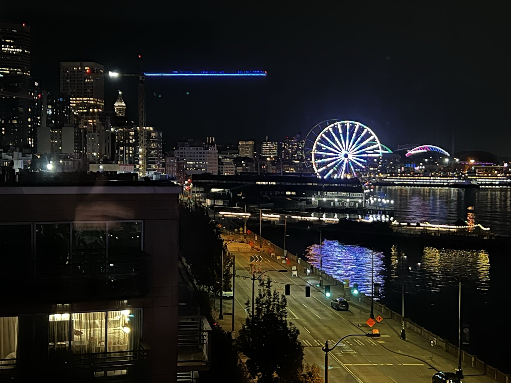
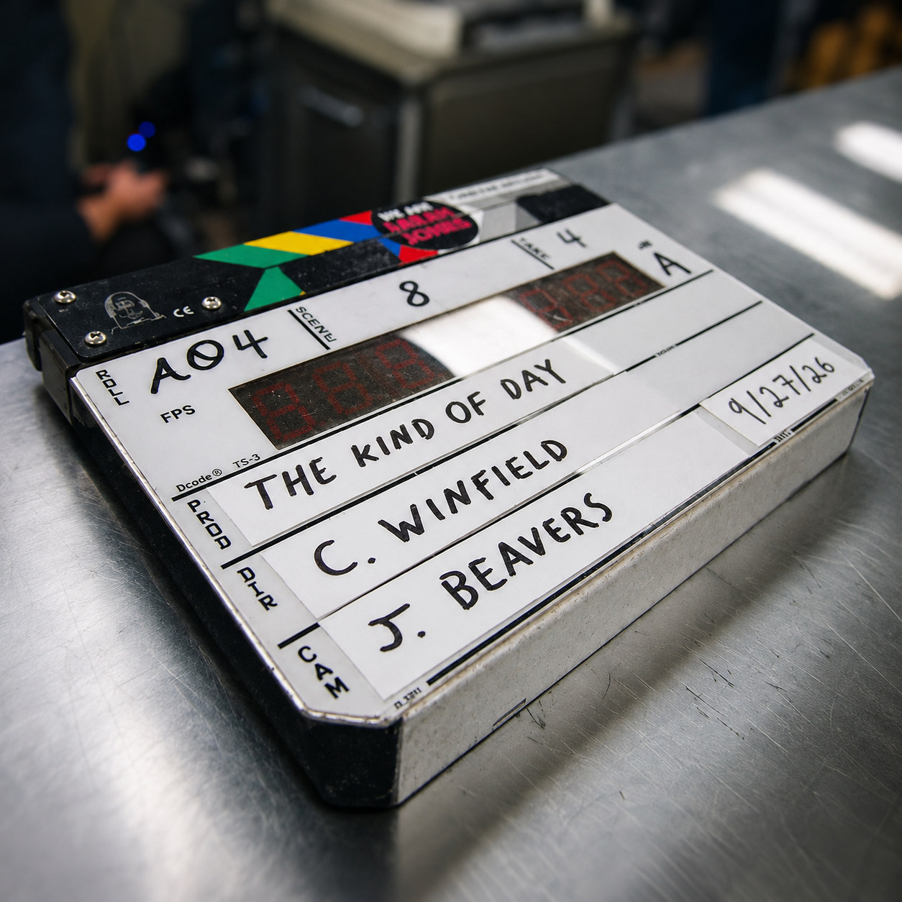
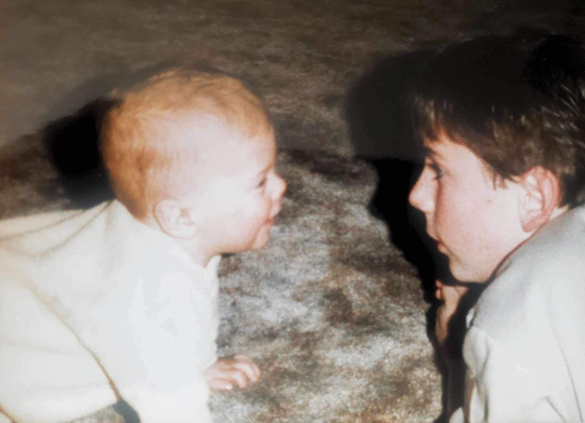

Visual archive
Gallery
Cover artwork, portraits, objects, and cinematic images from the Parker Beckett world.









Visual archive
Cover artwork, portraits, objects, and cinematic images from the Parker Beckett world.








